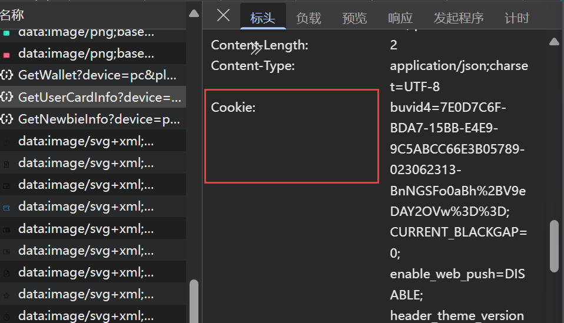
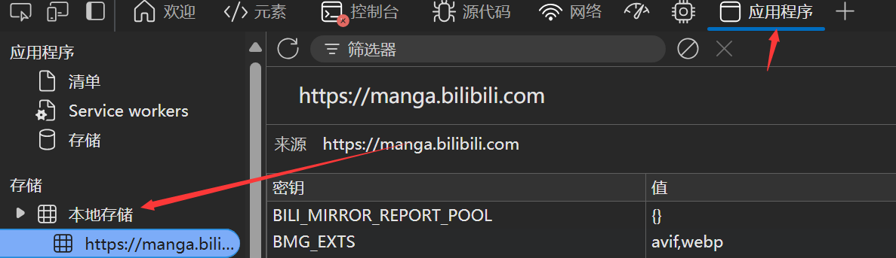

浏览器存储简介
前端常见数据存储方式：Cookie，Local Storage和Session Storage
一、Cookie
已知HTTP是一种无状态协议，而我们在使用Web的过程中，经常需要保持状态。
Cookie查看
按住f12进入开发者模式，在网络中查看：

- 由服务端产生
- 浏览器保存至本地
每次浏览器像同一服务端发送请求时，都会将Cookie发送回服务器。
Cookie 可以被这样来回在前后端传递。
用于记录
- 会话状态
- 身份验证
- 跟踪用户行为
- ……
优点
- 可以在浏览器和服务器之间来回传递，用于跟踪用户行为
- 可手动设置过期时间，灵活调整存储时间
缺点
- 每次传递Cookie增加流量浪费性能
- HTTP中明文传递，易被篡改
- 存储容量较小，一般为4kb
二、Local Storage
为解决耗流量和浪费性能问题，HTML5中引入Local Storage.
这个API允许浏览器长期存储键值对数据。不会随着HTTP请求发送到服务器。
优点
- 存储容量较大：5M
- 永久存储在客户端浏览器，不担心丢失
- 操作方便，API可通过JavaScript直接访问
缺点
- 只能访问自己域下的LS
对跨域数据共享、单点登录等功能有限制
- 不支持不同浏览器共享数据
LS通常保存个人偏好设置：隐私、浏览器外观等
查看LS：
f12- Application

三、Session Storage
也是HTML5引入的新Web存储方式，与Local Storage最大的区别还是数据尽在留恋其会话期间有效，会话结束后会被清除。
单个浏览器标签页或者窗口之间共享数据。
优点
- 数据仅存储在客户端
- 刷新后保留会话数据
- 每个标签/窗口间数据独立
缺点
- 不适合长期存储
- 数据不共享，使用场景有限
使用场景
- 多步骤表单
用户可以在填写过程中点击上一步、下一步修改数据。使用Session Storage暂存内容。
四、总结
| 特性 | Cookie | Local Storage | Session Storage |
|---|---|---|---|
| 存储容量 | ~4KB | ~5MB | ~5MB |
| 生命周期 | 可设置过期时间；不设置则会话结束失效 | 永久保存，除非手动删除 | 仅在当前会话中有效，关闭标签页即清除 |
| 与服务器通信 | 每次请求都会自动携带 | 不自动发送 （只存储本地，不与服务器交互） | 不自动发（只存储本地，不与服务器交互）送 |
| 可被访问的页面范围 | 当前域名下所有页面 | 当前域名下所有页面 | 当前标签页 |
| 数据类型支持 | 仅支持字符串 | 仅支持字符串 | 仅支持字符串 |
| 安全性 | 易受 XSS 攻击；可设置 HttpOnly 降低风险 | 易受 XSS 攻击 | 易受 XSS 攻击 |
| 使用场景示例 | 登录状态、用户追踪等 | 用户偏好、缓存数据等 | 表单填写临时保存、会话状态数据等 |
选择方法
- 客户端和服务器之间共享数据+长期存储
- Cookie
- 只在客户端长期存储+无需服务器交互
- Local Storage
- 只在客户端+会话期间暂存
- Session Storage